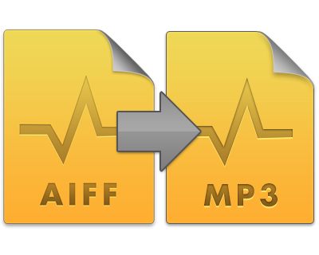
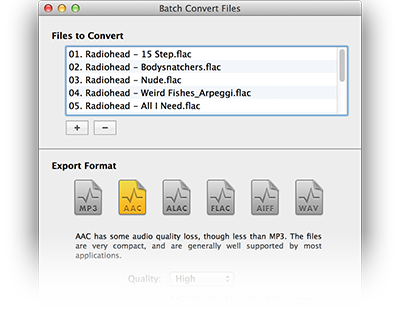
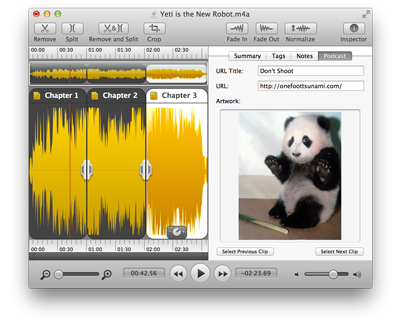
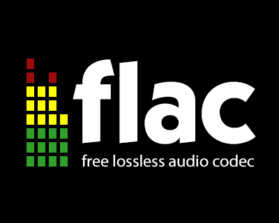

What's New in Fission 2
Fission 2.0 is a major upgrade over previous versions, with many great new features. Read on for an overview of new functionality added since Fission 1. You can always return to this manual via the Start window or the Help menu.
Brand New Interface
Every aspect of Fission has been examined and considered, with enhancements made across the board. If you haven't used Fission before, you'll find it's a snap to learn.
If you have used Fission before, it will be instantly familiar, but very much improved. We've updated the graphics and interface, and also worked to streamline how the most common tasks are performed. Fission is easier and faster than ever.
Multiple Windows
 Hallelujah! You can now open multiple files at once in Fission. Now you can copy and paste audio between files or just work on multiple items at the same time.
Hallelujah! You can now open multiple files at once in Fission. Now you can copy and paste audio between files or just work on multiple items at the same time.
Cross-Format Conversions
In addition to losslessly editing and saving a file in its original format, Fission can now also convert between formats. Save an AIFF file to MP3, a Apple Lossless file to AAC, or any other conversion you desire.
Batch Converter
Not only can Fission save a single audio file between any of its audio formats, it can also transcode multiple files for you in an instant. Using Fission's Batch Converter, you can convert an entire folder's worth of audio files to a new audio format.
Chapterized AAC Files
Podcasters rejoice! Fission lets you make Enhanced Podcasts with AAC in just seconds. Just place splits to mark chapters, then add artwork and URLs for each chapter. Select "Save as Chapterized AAC", and you'll get a top-quality enhanced podcast file.
SoundCloud Support
If you're a SoundCloud user, you'll love Fission 2! Fission has full support for sharing directly to your SoundCloud account, making it a snap to get your audio files online.
Full FLAC Support, and WAV too
FLAC users will be thrilled, as Fission can now read, edit and write FLAC files. While Fission has always supported the uncompressed AIFF format, as well as the losslessly compressed Apple Lossless format, many users have been asking for full FLAC support, and it's finally here. We've also added in full support for WAV audio files, just for good measure. That means Fission now has full support for the six most popular audio formats: MP3, AAC, Apple Lossless, FLAC, AIFF, and WAV.